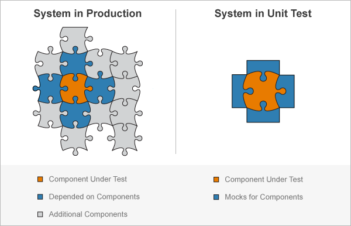

Create Mock Object
When unit testing, you are often interested in testing a portion of a complete system, isolated from the components it depends on. To test a portion of the system, we can substitute mock objects to replace the depended-on components. A mock object implements at least part of the same interface as the production object, but often in a manner that is simple, efficient, predictable, and controllable. When you use the mocking framework, the component under test is unaware of whether its collaborator is a "real" object or a mock object.

For example, suppose you want to test an algorithm for buying stock, but you do not want to test the entire system. You could use a mock object to replace the functionality of looking up the stock price, and another mock object to verify that the trader purchased the stock. The algorithm you are testing does not know that it is operating on mock objects, and you can test the algorithm isolated from the rest of the system.
Using a mock object, you can define behavior (a process known as stubbing). For example, you can specify that an object produces predefined responses to queries. You can also intercept and remember messages sent from the component under test to the mock object (a process known as spying). For example, you can verify that a particular method was called or a property was set.
The typical workflow to test a component in isolation is as follows:
Create mocks for the depended-on components.
Define behaviors of the mocks. For example, define the outputs that a mocked method or property returns when it is called with a particular set of inputs.
Test the component of interest.
Qualify interactions between the component of interest and the mocked components. For example, verify that a mocked method was called with particular inputs, or that a property was set.
Depended on Components
In this example, the component under test is a simple day-trading algorithm. It is the part of the system you want to test independent of other components. The day-trading algorithm has two dependencies: a data service to retrieve the stock price data and a broker to purchase the stock.
In a file DataService.m in your current working folder,
create an abstract class that includes a lookupPrice
method.
classdef DataService methods (Abstract,Static) price = lookupPrice(ticker,date) end end
In production code, there could be several concrete implementations of the
DataService class, such as a
BloombergDataService class. This class uses the
Datafeed Toolbox™. However, since we create a mock of the
DataService class, you do not need to have the toolbox
installed to run the tests for the trading algorithm.
classdef BloombergDataService < DataService methods (Static) function price = lookupPrice(ticker,date) % This method assumes you have installed and configured the % Bloomberg software. conn = blp; data = history(conn,ticker,'LAST_PRICE',date-1,date); price = data(end); close(conn) end end end
In this example, assume that the broker component has not been developed yet.
Once it is implemented, it will have a buy method that
accepts a ticker symbol and a specified number of shares to buy, and returns a
status code. The mock for the broker component uses an implicit interface, and
does not derive from a superclass.
Component Under Test
In a file trader.m in your current working folder, create a
simple day trading algorithm. The trader function accepts as
inputs a data service object that looks up the price of the stock, a broker
object that defines how the stock is bought, a ticker symbol, and a number of
shares to purchase. If the price from yesterday is less than the price two days
ago, instruct the broker to buy the specified number of shares.
function trader(dataService,broker,ticker,numShares) yesterday = datetime('yesterday'); priceYesterday = dataService.lookupPrice(ticker,yesterday); price2DaysAgo = dataService.lookupPrice(ticker,yesterday-days(1)); if priceYesterday < price2DaysAgo broker.buy(ticker,numShares); end end
Mock Objects and Behavior Objects
The mock object is an implementation of the abstract methods and properties of the interface specified by a superclass. You can also construct a mock without a superclass, in which case the mock has an implicit interface. The component under test interacts with the mock object, for example, by calling a mock object method or accessing a mock object property. The mock object carries out predefined actions in response to these interactions.
When you create a mock, you also create an associated behavior object. The behavior object defines the same methods as the mock object and controls mock behavior. Use the behavior object to define mock actions and qualify interactions. For example, use it to define values a mocked method returns, or verify that a property was accessed.
At the command prompt, create a mock test case for interactive use. Using the mock in a test class instead of at the command prompt is presented later in this example.
import matlab.mock.TestCase
testCase = TestCase.forInteractiveUse;
Create Stub to Define Behavior
Create a mock for the data service dependency and examine the methods on it. The data service mock returns predefined values, replacing the implementation of the service that provides actual stock prices. Therefore, it exhibits stubbing behavior.
[stubDataService,dataServiceBehavior] = createMock(testCase,?DataService); methods(stubDataService)
Methods for class matlab.mock.classes.DataServiceMock: Static methods: lookupPrice
In the DataService class, the
lookupPrice method is abstract and static. The mocking
framework implements this method as concrete and static.
Define behavior for the data service mock. For ticker symbol
"FOO", it returns the price yesterday as $123 and
anything before yesterday is $234. Therefore, according to the
trader function, the broker always buys stock
"FOO". For the ticker symbol "BAR", it
returns the price yesterday as $765 and anything before yesterday is $543.
Therefore, the broker never buys stock "BAR".
import matlab.unittest.constraints.IsLessThan yesterday = datetime('yesterday'); testCase.assignOutputsWhen(dataServiceBehavior.lookupPrice(... "FOO",yesterday),123); testCase.assignOutputsWhen(dataServiceBehavior.lookupPrice(... "FOO",IsLessThan(yesterday)),234); testCase.assignOutputsWhen(dataServiceBehavior.lookupPrice(... "BAR",yesterday),765); testCase.assignOutputsWhen(dataServiceBehavior.lookupPrice(... "BAR",IsLessThan(yesterday)),543);
You can now call the mocked lookupPrice method.
p1 = stubDataService.lookupPrice("FOO",yesterday) p2 = stubDataService.lookupPrice("BAR",yesterday-days(5))
p1 = 123 p2 = 543
While the assignOutputsWhen method on
testCase is convenient to specify behavior, there is more
functionality if you use the AssignOutputs action. For more
information, see Specify Mock Object Behavior.
Create Spy to Intercept Messages
Create a mock for the broker dependency and examine the methods on it. Since
the broker mock is used to verify interactions with the component under test
(the trader function), it exhibits spying behavior. The
broker mock has an implicit interface. While the buy method
is not currently implemented, you can create a mock with it.
[spyBroker,brokerBehavior] = createMock(testCase,'AddedMethods',{'buy'}); methods(spyBroker)
Methods for class matlab.mock.classes.Mock: buy
Call the buy method of the mock. By default it returns
empty.
s1 = spyBroker.buy
s2 = spyBroker.buy("inputs",[13 42])
s1 =
[]
s2 =
[]
Since the trader function does not use the status return
code, the default mock behavior of returning empty is acceptable. The broker
mock is a pure spy, and does not need to implement any stubbing behavior.
Call Component Under Test
Call the trader function. In addition to the ticker symbol
and the number of shares to buy, the trader function takes as
inputs the data service and the broker. Instead of passing in actual data
service and broker objects, pass in the spyBroker and
stubDataService mocks.
trader(stubDataService,spyBroker,"FOO",100) trader(stubDataService,spyBroker,"FOO",75) trader(stubDataService,spyBroker,"BAR",100)
Verify Function Interactions
Use the broker behavior object (the spy) to verify that the
trader function calls the buy method,
as expected.
Use the TestCase.verifyCalled method to verify that the
trader function instructed the buy
method to buy 100 shares of the FOO stock.
import matlab.mock.constraints.WasCalled; testCase.verifyCalled(brokerBehavior.buy("FOO",100))
Verification passed.
Verify that FOO stock was purchased two times, regardless
of the specified number of shares. While the verifyCalled
method is convenient to specify behavior, there is more functionality if you use
the WasCalled constraint. For example, you can verify that a
mocked method was called a specified number of times.
import matlab.unittest.constraints.IsAnything testCase.verifyThat(brokerBehavior.buy("FOO",IsAnything), ... WasCalled('WithCount',2))
Verification passed.
Verify that the buy method was not called requesting 100
shares of the BAR stock.
testCase.verifyNotCalled(brokerBehavior.buy("BAR",100))
Verification passed.
Although the trader function was called requesting 100
shares of BAR stock, the stub defined yesterday's price for
BAR to return a higher value than all days prior to
yesterday. Therefore, the broker never buys stock
"BAR".
Test Class for trader Function
The interactive test case is convenient to experiment with at the command prompt. However, it is typical to create and use mocks within a test class. In a file in your current working folder, create the following test class that incorporates the interactive testing from this example.
classdef TraderTest < matlab.mock.TestCase methods(Test) function buysStockWhenDrops(testCase) import matlab.unittest.constraints.IsLessThan import matlab.unittest.constraints.IsAnything import matlab.mock.constraints.WasCalled yesterday = datetime('yesterday'); % Create mocks [stubDataService,dataServiceBehavior] = createMock(testCase,... ?DataService); [spyBroker,brokerBehavior] = createMock(testCase,... 'AddedMethods',{'buy'}); % Set up behavior testCase.assignOutputsWhen(dataServiceBehavior.lookupPrice(... "FOO",yesterday),123); testCase.assignOutputsWhen(dataServiceBehavior.lookupPrice(... "FOO",IsLessThan(yesterday)),234); % Call function under test trader(stubDataService,spyBroker,"FOO",100) trader(stubDataService,spyBroker,"FOO",75) % Verify interactions testCase.verifyCalled(brokerBehavior.buy("FOO",100)) testCase.verifyThat(brokerBehavior.buy("FOO",IsAnything),... WasCalled('WithCount',2)) end function doesNotBuyStockWhenIncreases(testCase) import matlab.unittest.constraints.IsLessThan yesterday = datetime('yesterday'); % Create mocks [stubDataService,dataServiceBehavior] = createMock(testCase,... ?DataService); [spyBroker,brokerBehavior] = createMock(testCase, ... 'AddedMethods',{'buy'}); % Set up behavior testCase.assignOutputsWhen(dataServiceBehavior.lookupPrice(... "BAR",yesterday),765); testCase.assignOutputsWhen(dataServiceBehavior.lookupPrice(... "BAR",IsLessThan(yesterday)),543); % Call function under test trader(stubDataService,spyBroker,"BAR",100) % Verify interactions testCase.verifyNotCalled(brokerBehavior.buy("BAR",100)) end end end
Run the tests and view a table of the results.
results = runtests('TraderTest');
table(results)
Running TraderTest
..
Done TraderTest
__________
ans =
2×6 table
Name Passed Failed Incomplete Duration Details
_________________________________________ ______ ______ __________ ________ ____________
'TraderTest/buysStockWhenDrops' true false false 0.24223 [1×1 struct]
'TraderTest/doesNotBuyStockWhenIncreases' true false false 0.073614 [1×1 struct]